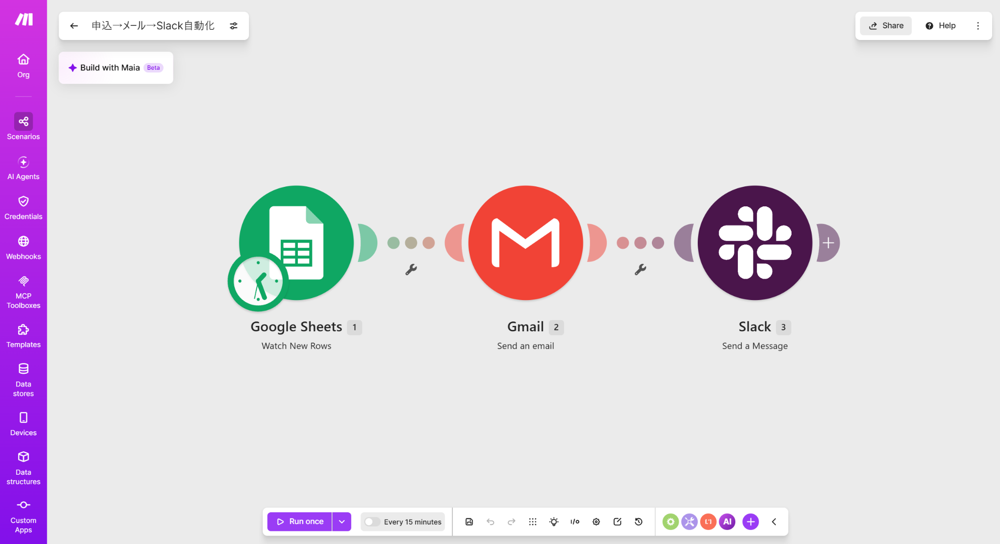

自主制作デモ
カテゴリ：業務自動化（ノーコード連携）
Make等を用いた業務自動化デモ
フォームでの受付から、表への登録、お礼メールの送信、Slack通知、支払い案内までを自動でつなぐ仕組みのデモです。Make（複数のサービスをつなげて自動化するツール）を使って作成しました。

自動化デモ動画
フォーム受付を起点に、データ登録、メール送信、Slack通知などをMakeで連携・自動化する流れをご紹介します。
どんな課題を想定したか
申込や依頼をフォームで受け付けたあと、内容を表に転記し、お礼メールを個別に送り、担当チームに知らせ、支払いの案内を送る、という一連の作業を手作業で行っている現場は少なくありません。件数が増えるほど、対応漏れや遅れが起きやすくなります。
どういう仕組みか
Makeを使い、次の流れを自動でつなげています。一つのフォーム入力をきっかけに、後続の作業がまとめて動く形にしています。
全体の処理フロー
フォーム受付
データ登録
Google Sheetsへ登録
お礼メール
Gmailで送信
Slack通知
担当チームへ連絡
支払い案内
工夫した点
- ノーコード（プログラムを書かずに設定でつなげられる）のツールを使い、非エンジニアでも流れの確認・修正がしやすい形にした。
- 各ステップを独立させ、どこか一つを止めたり差し替えたりしても全体が崩れにくい構成にした。
使用した技術・ツール
連携サービス：Make / Gmail / Slack / Google Sheets
注意事項
本事例は自主制作のデモであり、実在の企業・取引のデータは含まれていません。
実際の業務規模での運用結果や成果を保証するものではなく、仕組みづくりの一例としてご紹介しています。